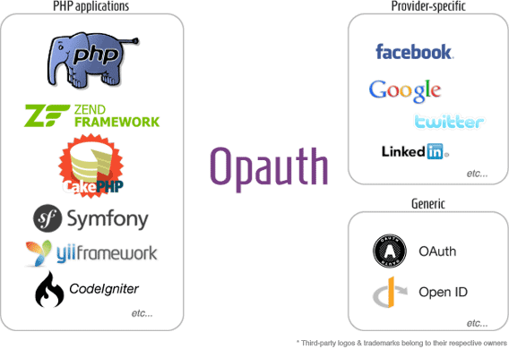

Opauth
Multi-provider authentication framework for PHP

Opauth enables PHP applications to do user authentication with ease.
What is Opauth?
Inspired by OmniAuth for Ruby, Opauth provides a standardized method for PHP applications to interface with authentication providers.
Opauth as a framework provides a set of API that allows developers to create strategies that work in a predictable manner across PHP frameworks and applications.
Opauth works well with other PHP applications & frameworks. It is currently supported on:
- vanilla (plain) PHP applications (of course)
- CakePHP (maintained by uzyn)
- CodeIgniter (maintained by destinomultimedia)
- CodeIgniter (maintained by mcatm)
- Yii Framework (maintained by kahwee)
- and more to come.
If your PHP framework of choice is not yet listed, you can still use Opauth like you would a normal PHP component (class).
Quick start
- Download or
git cloneOpauth. Set
DocumentRootof your web server toexample/.
(Opauth can be instantiated in your own PHP app, but we will leave that out of this quick start guide)Configure Opauth
cp example/opauth.conf.php.default example/opauth.conf.php
and make the necessary changes.Install some Opauth strategies.
We recommend that you start with FacebookSend user to
http://path_to_opauth/facebookto authenticate.
Check out the wiki for more details & documentations.
Available strategies
Provider-specific:
| Strategy | Info | Download | |
|---|---|---|---|
 Facebook Facebook |
uzyn/opauth-facebook | ZIP / TAR | Try me! |
 Google Google |
uzyn/opauth-google | ZIP / TAR | Try me! |
 Twitter Twitter |
uzyn/opauth-twitter | ZIP / TAR | Try me! |
 Instagram Instagram |
muhdazrain/opauth-instagram | ZIP / TAR | Try me! |
| OpenID | uzyn/opauth-openid | ZIP / TAR | Try me! |
Generic strategy: OAuth
Opauth is a relatively new framework, having only released its v0.1.0 in late May 2012.
We need your help in expanding the list of available strategies. Refer to strategy contribution guide if you would like to contribute a strategy. Do notify us if you have developed an Opauth strategy and would like it to be listed.
Issues & questions
- Issues: Github Issues
- Discussion group: Google Groups
- Twitter: @uzyn
- Email me: chua@uzyn.com
- IRC: #opauth on Freenode
Used Opauth in your project? Tell us! We'll provide a link to your site.